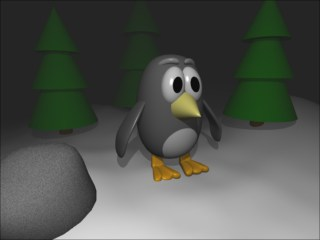

|
The fog object allows you to renderer your scene with fog.
Attention: The fog object just works with the Cheetah renderer at the moment. Support for the Falcon renderer will be added later.
The fog objects usage is not just limited to creating fog. You can also use it to render under water scenes (blue fog color) or to darken out the back of a scene (black fog color) for night-time effects.

Black fog was used here to darken out the trees in the back.
Properties
- Color: The color of the fog.
- Type:
- Linear: The fog intensity increases linearly.
- Exp: The fog intensity increases exponentially.
- Exp^2: The fog intensity increases squared exponentially.
- Density: The higher the density, the foggier it will become.
- Start: Distance from the camera were the fog starts. So the atmosphere in the front of the scene can be crystal clear while the back is foggy.
|